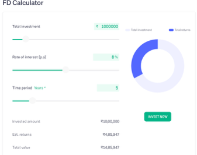
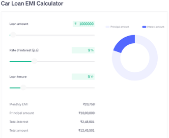

Loan vs FD
Recently, I came across a video which says that if you have INR 10 lakh and want to buy a car, it is better to buy via loan than to pay the 10 lakh upfront. The proof was the screenshots of interest paid in the loan and interest received from FD. To put it in numbers, if you invest the 10lakh in a bank FD the interest amount you get at say 8% rate in say, 5 years is higher than the interest you need to pay on the loan say, at 9% rate. The ‘reason’ offered for this difference was - bank FD is compounded over 5 years vs the car loan which is on a reducing balance, so you will be better off taking a loan at a higher rate than the FD rate.
I have got these numbers from Groww for easy representation


The statement above made by the influencer is clearly wrong and see if you could identify the fallacy.
If the statement is true, then there is an arbitrage opportunity to make free money, take a 10lakh loan at 9% and invest in bank FD at 8% and make money at the end ?
The interest rate in the (car) loan is for the time value of money plus the risk premium, sure the interest component of EMI reduces as you pay down your loan every month. But, is it correct to say you would be better off taking the loan at a higher rate (than what you would get in a FD) and investing the 10lakh in FD ? for a moment forget about tax on FD. The FD’s future value of INR 14.85 lakh after 5 years means that it is equal to today’s 10lakh at 8% annual discount rate 1. You can see that the FD amount is paid to the investor in full only after the term, not during the term. So, if we want to compare the loan, it is only fair that you compare the payments in the same terms.
Calcualation
EMI for a 10 lakh loan at 9% annual interest rate for 5 years is 20.75k. Then there is a bank FD that pays 8% annual interest on the investment compounded monthly. Assume you can withdraw the EMI amount from the bank to meet the payment. If the bank FD is really beneficial at the end we will be left with money, but instead we will be short by 2EMIs.
Conclusion
I would think that the reason one should take a loan even though they have ready cash is related to optionality of cash and risk taking options. If you have 10 lakh cash in FD, you can sleep in peace knowing that you can get ready cash by breaking the FD in case of any emergency (reduced interest is only a small price to pay). Or you want to deploy the cash in an investment over a period of time.
PS: I surely have spent more effort in refuting the bullshit inline with the Bullshit Asymmetry Principle
Footnotes
The compounding done by Groww is quarterly so the annual return is ~8.2%4↩︎